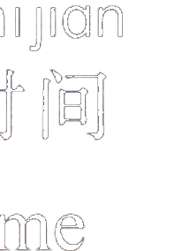

Qǐng zuò, nín yào shénme?男： 请坐，您要什么？Qǐng wǒ yì bēi chá.女： 请 ( ) 我一杯茶。
第四部分Part IVЧасть IV
第19—20题： 选择正确答案。Questions 19–20: Choose the correct answer for each question.Задания 19–20: Выберите правильный ответ на каждый вопрос.
例如:
请问 现在 几 点 了？★说话人 想 知道 什么？shíjiānA 时间míngziB 名字fángjiānhàoC 房间号
Excuse me, what time is it now?
What does the speaker want to know?
A time
B name
C room numberПростите, который сейчас час?
Что хочет знать говорящий?
A время
B имя
C номер комнаты明天 星期天， 我们可以 去 饭店 吃 饺子 吗？★明天 是：XīngqīwǔA 星期五XīngqīliùB 星期六XīngqīrìC 星期日
爸爸 今天 在 家 里 工作， 我们 不要 去 他 的 房间。★爸爸 今天：zài jiā li gōngzuòA 在 家里 工作zuòle miàntiáorB 做了 面条儿bù néng qù gōngsīC 不 能 去 公司